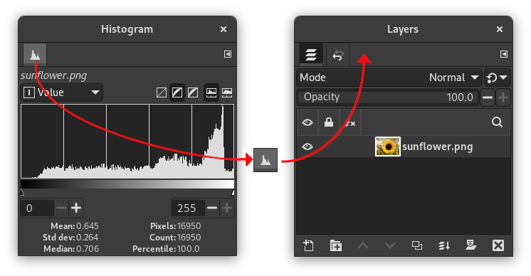
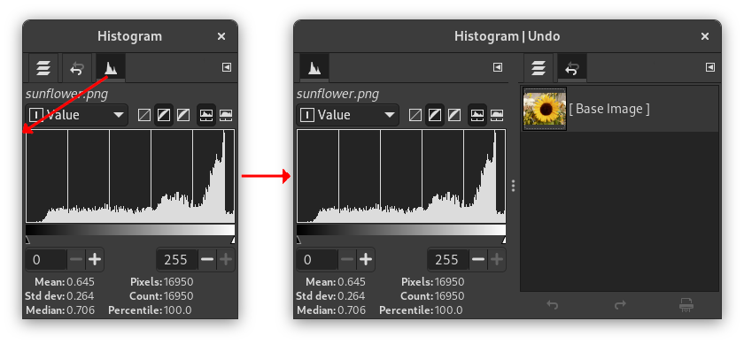
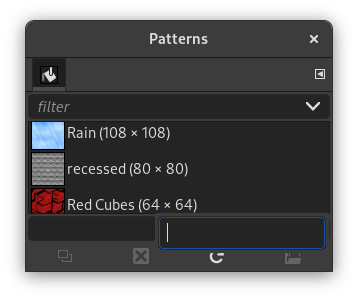

GIMP has great flexibility for arranging dialogs on your screen. A “dialog” is a moving window which contains options for a tool or is dedicated to a special task. A “dock” is a container which can hold a collection of persistent dialogs, such as the Tool Options dialog, Brushes dialog, Palette dialog, etc. Docks cannot, however, hold non-persistent dialogs such as the Preferences dialog or the image window.
GIMP has three default docks:
-
the Tool Options, Device Status, Undo History and Images dock under the Toolbox in the left panel,
-
the Brushes, Patterns, Fonts and Document History dock in the upper part of the right panel,
-
the Layers, Channels and Paths dock in the lower part of the right panel.
In these docks, each dialog is in its own tab.
In multi-window mode, the Toolbox is a utility window and not a dock. In single-window mode, it belongs to the single window.
Use → to view a list of dockable dialogs. Select a dockable dialog from the list to view the dialog. If the dialog is available in a dock, then it is made visible. If the dialog is not in a dock, the behavior is different in multi and single window modes:
-
In multi-window mode, a new window, containing the dialog, appears on the screen.
-
In single-window mode, the dialog is automatically docked to the Brushes-Document History dock as a tab.
You can click-and-drag a tab and drop it in the wanted place:
-
either in the tab bar of a dock, to integrate it in the dialog group,
-
or on a docking bar that appears as a blue line when the mouse pointer goes over a dock border, to anchor the dialog to the dock.
In multi-window mode, you can also click on the dialog title and drag it to the wanted place.
Figure 3.6. Integrating a new dialog in a dialog group

Here, in multi-window mode, the Histogram dialog was dragged to the tab bar of the Layers-Undo dock.
More simple: the Add tab command in the Tab menu Section 2.3.2, “Tab Menu”.
Figure 3.7. Anchoring a dialog to a dock border

The Histogram dialog dragged to the left vertical docking bar of the right panel and the result: the dialog anchored to the left border of the right panel. This dialog now belongs to the right panel.
So, you can arrange dialogs in a multi-column display, interesting if you work with two screens, one for dialogs, the other for images.
![[Tip]](images/tip.png)
|
Tip |
|---|---|
|
Press the Tab key in the image window to toggle the visibility of the docks. This is useful if the docks hide a portion of the image window. You can quickly hide all the docks, do your work, then display all the docks again. Press the Tab key inside a dock to navigate through the dock. |
In each dialog, you can access a special menu of tab-related operations by
pressing the Tab Menu button
 .
The exact commands shown in the menu depend on the active dialog, but
they always include operations for creating new tabs, closing or
detaching tabs.
.
The exact commands shown in the menu depend on the active dialog, but
they always include operations for creating new tabs, closing or
detaching tabs.

The Tab menu gives you access to the following commands:
- Context Menu
-
At the top of each Tab menu, an entry opens the dialog's context menu, which contains operations specific to that particular type of dialog. For example, the context menu for the Layers tab is Layers Menu, which contains a set of operations for manipulating layers.
- Add Tab
-
Add Tab opens into a submenu allowing you to add a large variety of dockable dialogs as new tabs.
- Close Tab
-
Close the dockable dialog. Closing the last dialog in a dock causes the dock itself to close.
- Detach Tab
-
Detach the dialog from the dock, creating a new dock with the detached dialog as its only member. It has the same effect as dragging the tab out of the dock and releasing it at a location where it cannot be docked.
It's a way to create a paradoxical new window in single-window mode!
If the tab is locked, this menu item is disabled.
- Lock Tab to Dock
-
Prevent the dialog from being moved or detached. When activated, is disabled.
- Preview Size
-
Many, but not all, dialogs have Tab menus containing a Preview Size option, which opens a submenu giving a list of sizes for the items in the dialog, from small to large. For example, the Brushes dialog shows pictures of all available brushes: the Preview Size determines how large the pictures are. The default is Medium size.
- Tab Style
-
Tab Style opens a submenu allowing you to choose the appearance of the tabs at the top. There are five choices, but not all are enabled for every dialog:
- Icon
-
Use an icon to represent the dialog type.
- Current Status
-
Is only available for dialogs that allows you to select something, such as a brush, pattern, gradient, etc. Current Status shows a representation of the currently selected item in the tab top.
- Text
-
Use text to display the dialog type.
- Icon and Text
-
Using both an icon and text results in wider tabs.
- Status and Text
-
Show the currently selected item and text with the dialog type.
- View as List, View as Grid
-
These entries are shown in dialogs that allow you to select an item from a set: brushes, patterns, fonts, etc. You can choose to view the items as a vertical list, with the name of each beside it, or as a grid, with representations of the items but no names. Each has its advantages: viewing as a list gives you more information, but viewing as a grid allows you to see more possibilities at once. The default for this varies across dialogs: for brushes and patterns, the default is a grid; for most other things, the default is a list.
When the tree-view is View as List, you can use tags. Please see Section 3.7, “Tagging”.
You can also use a list search field:
Figure 3.10. The list search field.

Press Ctrl+F to open the list search field, displayed at the bottom. An item must be selected for this command to be effective.
The list search field automatically closes after five seconds if you do nothing.
![[Note]](images/note.png)
Note The search field shortcut is also available for the tree-view you get in the “Brush”, “Font” or “Pattern” option of several tools.
- Show Button Bar
-
Some dialogs display a button bar on the bottom of the dialog; for example, the Patterns, Brushes, Gradients, and Images dialogs. This is a toggle. If it is checked, then the Button Bar is displayed.
- Show Image Selection
-
This option is available in multi-window mode only. This is a toggle. If it is checked, then the active image is shown at the top of the dock:
It is not available for dialogs docked below the Toolbox. This option is interesting only if you have several open images on your screen. - Auto Follow Active Image
-
This option is available in multi-window mode only. This option is also interesting only if you have several images open on your screen. Then, the information displayed in a dock is always that of the selected image in the Image Selection drop-down list. If the Auto Follow Active Image is disabled, the image can be selected only in the Image Selection. If enabled, you can also select it by activating the image directly (clicking on its title bar).
- Move to Screen
-
The option is an experimental functionality to choose a different display.